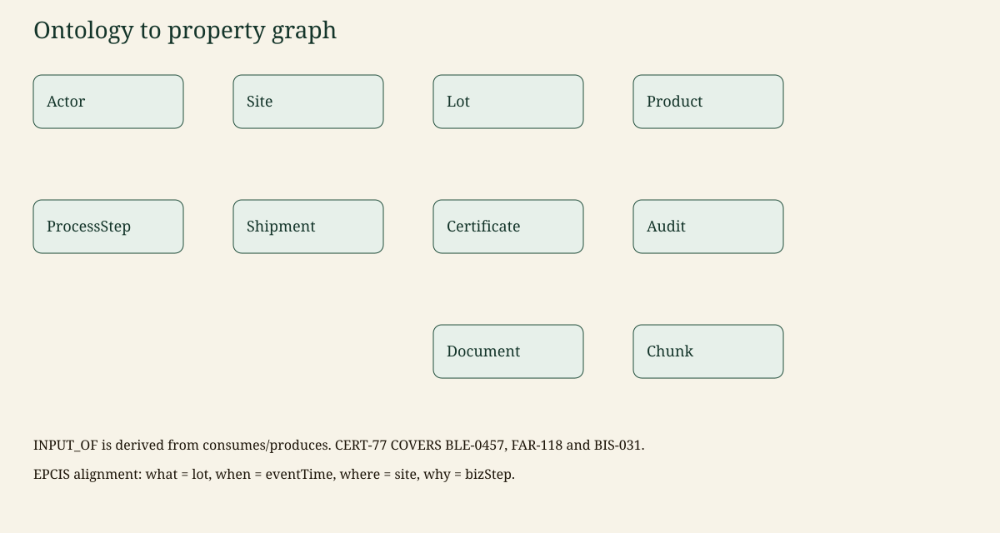

AgriTrace. Fictional data. Canonical write-up: the repository README. Images: docs/assets, referenced relatively from this file.
Canonical copy: README §6.
File: ontology/traceability.ttl, owl:versionInfo "0.1.0".
Actor, Site, Product, Ingredient, Lot, ProcessStep, Shipment, Certificate, Audit, Document, Chunk.
ProcessStep specialises into commissioning (a harvest may have no input lot) and transformation (an empty input list is a broken chain).
OPERATES, PRODUCED_AT, OF_PRODUCT, CONSUMES, PRODUCES, PERFORMED_AT, INPUT_OF, CONTAINS, SHIPPED_FROM, SHIPPED_TO, COVERS, ISSUED_BY, HELD_BY, AUDITS, EVIDENCES, ABOUT, PART_OF, MENTIONS, INGREDIENT_OF, USED_IN.
INPUT_OF is derived from a process that consumes one lot and produces another. The process remains the event of record.
| AgriTrace | EPCIS idea |
|---|---|
| Lot | object id + lot / quantity |
| Site | business location |
| ProcessStep.event_time | eventTime |
| ProcessStep.biz_step | bizStep commissioning or transforming |
| Shipment | shipping event |
| Certificate, Audit | not core EPCIS; first-class here so validity is a query |
Each label has a unique id constraint. See src/agritrace/graph/schema.py. Chunks use vector index chunk_embedding (64 dimensions in mock mode).
MATCH (wheat:Lot {id: 'BLE-0457'})-[:INPUT_OF]->(flour:Lot {id: 'FAR-118'})
-[:INPUT_OF]->(biscuits:Lot {id: 'BIS-031'})
MATCH (cert:Certificate {id: 'CERT-77'})-[:COVERS]->(biscuits)
RETURN wheat.id, flour.id, biscuits.id, cert.id
LIMIT 5CERT-77 is valid from 2025-04-01 to 2027-12-31 and lists exactly those three lots.
